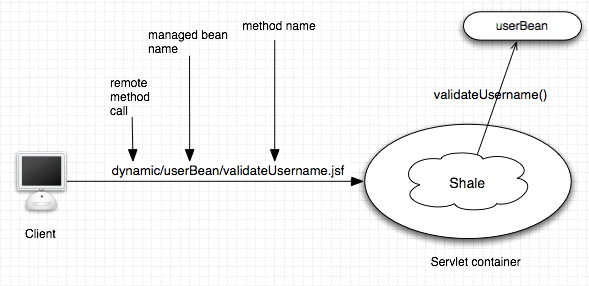
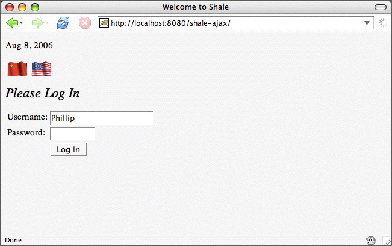
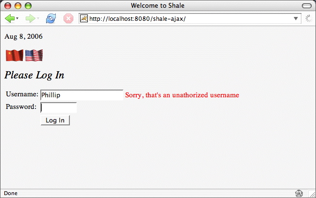

Shale lets you map server-side resources, such as JavaScript or managed bean methods, to URLs. Shale turns URLs into resources with processors, which apply a mapping to a URL and take appropriate action. Out of the box, Shale provides the following processors:
Shale can map URLs to "classpath" resources (those found in
/WEB-INF/classes, or in a JAR file found in
/WEB-INF/lib. This makes it very easy, for example,
for a JSF component library to embed JavaScript and CSS stylesheet
resources required by its components, within the same JAR file,
without requiring the application developer to explicitly configure
anything, or place component resources at any particular point in
the web application's document hierarchy. In addition, Shale can
map directly to webapp resources (equivalent to the static resource
serving capability of most servlet containers), if desired.
Shale maps URLs to managed bean methods in your appliation with the
Method Binding processor. For example, Shale maps the URL
remote/userBean/validateUsername.jsf to a call to
userBean.validateUsername() as shown in the following
figure (assuming the suffix .jsf is mapped to the JSF
servlet). This simple mechanism, among other things, lets you easily
implement Ajax (Asynchronous JavaScript and XMLHttpRequest)
functionality.

Here's a form that implements realtime validation:

When the user leaves the username textfield, Shale
calls the backing bean's validateUsername method. This
application only has one registered user, and his name is Joe, so if
the user types anything other than Joe in the username field, we
display an error message, like this:

To implement the Ajax call, we first hook up a client-side event
handler to our username textfield:
...
<h:panelGroup>
<h:inputText onfocus="hideMessage();"
onblur="validateUsername(this.value);"/>
<f:verbatim>
<div id="message" style="display: none;"></div>
</f:verbatim>
</h:panelGroup>
...
Notice the empty DIV. That's the DIV that we'll fill
with an error message as appropriate. When the user enters the
username field, we clear out the message DIV, like this:
function hideMessage() {
$("message").style.display = "none"; // the $ is Prototype's shorthand for window.document.getElementById()
}
Here's the JavaScript validateUsername function:
function validateUsername(username) {
new Ajax.Request(
"dynamic/userBean/validateUsername.faces",
{
method: "post",
parameters: "username=" + username,
onComplete: showMessage
}
);
}
The preceding code fragment uses the Prototype JavaScript Library to
make the Ajax call. You can use whatever framework you like, or you
can code the Ajax call yourself. The point here is the URL, which
Shale maps to userBean.validateUsername(). Remember, when
you invoke the URL dynamic/userBean/validateUsername.jsf
Shale thinks invoke userBean.validateUsername().
Here's what that Java code looks like:
public void validateUsername() {
FacesContext context = FacesContext.getCurrentInstance();
String username = (String)context
.getExternalContext()
.getRequestParameterMap().get("username");
if( ! "Joe".equals(username))
writeResponse(context, "Sorry, that's an unathorized username");
}
private void writeResponse(FacesContext context,
ResponseWriter writer =
(new ResponseFactory()).getResponseWriter(context, "text/plain");
try {
writer.writeText(text, null);
}
catch (IOException e) {
e.printStackTrace();
}
}
We get the username field's value from the corresponding request
parameter and validate that value. After Shale invokes the
validateUsername method, it short-circuits the JSF
lifecycle so that JSF does not render a response.
Note: The ResponseFactory class is part of the
Shale remoting package. See the javadocs
for more information.
After the call to userBean.validateUsername() returns,
Prototype calls our onComplete JavaScript function, which we
specified as showMessage. Here's what that JavaScript
function looks like:
function showMessage(xhr) {
var msg = $("message");
msg.style.display = "inline";
msg.style.color = "red";
msg.innerHTML = xhr.responseText; // set the innerHTML of the message DIV
}